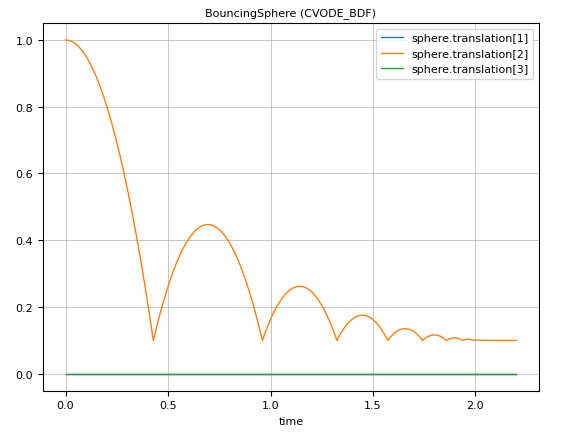

Collision Handling
Collision handling with elastic response calculation is performed for convex shapes that are defined with a contact material or solid material. The elastic response calculation is currently solely based on the information about the largest penetration that is computed with an improved Minkowski Portal Refinement (MPR) algorithm. Collision response with an adaptive integration method works only reasonable, if the convex objects have point-contact.
Collision handling can be globally activated with keyword enableContactDetection = true set in the Scene. Only Solid Object3Ds can take place in collision situations.
The example in "$(Modia3D.path)/test/Tutorial/BouncingSphere.jl" defines a sphere that is bouncing on the ground. The essential statements are:
module BouncingSphere3D
using Modia
BouncingSphere = Model(
boxHeigth = 0.1,
world = Object3D(feature=Scene(enableContactDetection = true,
animationFile = "BouncingSphere.json")),
ground = Object3D(parent=:world, translation=:[0.0,-boxHeigth/2,0.0],
feature=Solid(shape=Box(lengthX=4.0, lengthY=:boxHeigth, lengthZ=0.7),
visualMaterial=VisualMaterial(color="DarkGreen"),
solidMaterial="Steel",
collision=true)),
sphere = Object3D(feature=Solid(shape=Sphere(diameter=0.2),
visualMaterial=VisualMaterial(color="Blue"),
solidMaterial="Steel",
massProperties=MassPropertiesFromShapeAndMass(mass=0.001),
collision=true)),
free = FreeMotion(obj1=:world, obj2=:sphere, r=Var(init=[0.0, 1.0, 0.0]))
)
bouncingSphere = @instantiateModel(buildModia3D(BouncingSphere), unitless=true)
simulate!(bouncingSphere, stopTime=2.2, dtmax=0.1)
@usingModiaPlot
plot(bouncingSphere, "free.r", figure=1)
endor
julia> import Modia3D
julia> include("$(Modia3D.path)/test/Tutorial/BouncingSphere.jl")The commands above generate an instance of the model, simulate it and generate the following plot:

Note:
- Only Solid Object3Ds where a
shapeis defined andcollision=trueis considered in collision handling.
- Supported Shapes are: Sphere, Ellipsoid, Box, Cylinder, Cone, Capsule, Beam, FileMesh.
- FileMesh:
- Only .obj files are supported.
- MPR algorithm uses the convex hull of a concave geometry, or you have to partition it into convex sub meshes with e.g., V-HACD.
- FileMesh:
- Make sure mass properties are computed and define how it behaves in contact situations. Define a
solidMaterial="NameOfSolidMaterial"or acontactMaterial="NameOfContactMaterial"(this defines for example YoungsModulus). The used names must be available in theModia3D/palettes/contactPairMaterials.jsonwhere for various combinations of contact materials, additional data is provided (for example thecoefficientOfRestitution). For more details about the contact material data, see Solid material and Contact pair material. The details of the contact computation are sketched in Contact Force Law.